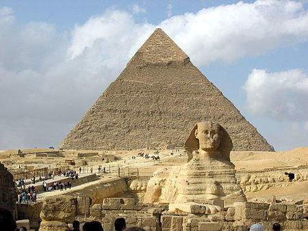
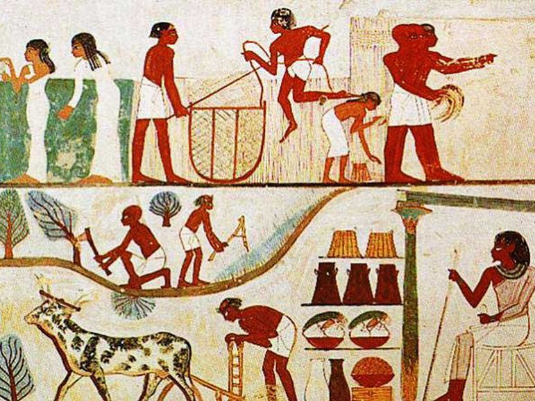
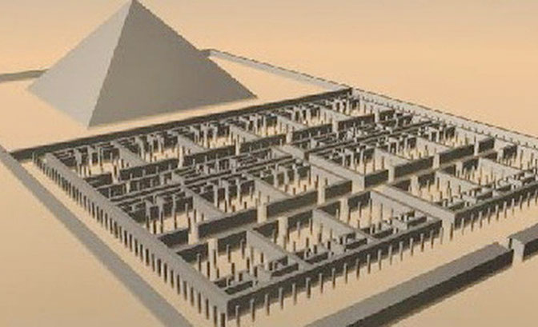
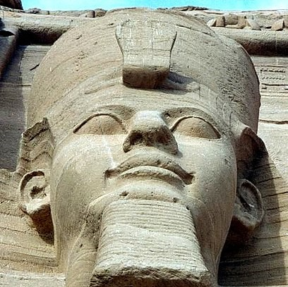
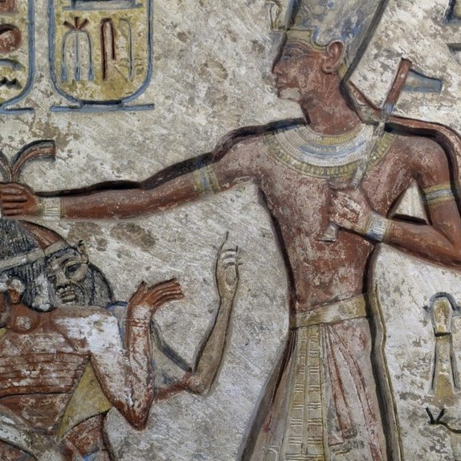
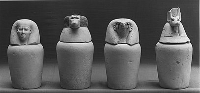
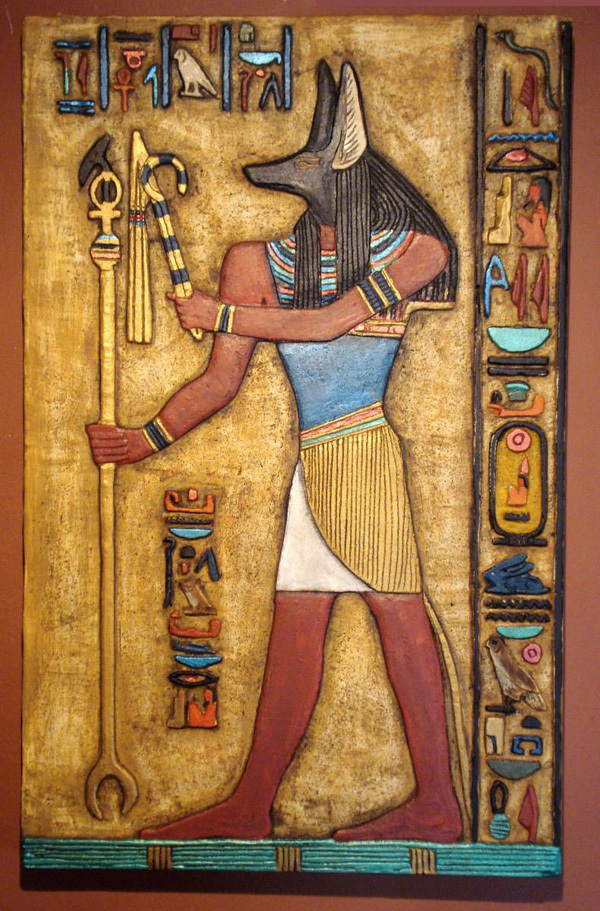

Ai Cập cổ đại
Là một trong bốn nền văn minh cổ đại nhất của loài người bên cạnh Lưỡng Hà, Hoàng Hà, Ấn Độ; xuất hiện khoảng 3000 năm trước Công Nguyên. Xuyên suốt lịch sử nhân loại, Ai Cập không ít lần bị xâm chiến và đô hộ nhưng những phát triển về văn hóa và khoa học kỹ thuật là luôn trường tồn. Những thành tựu ấn tượng của người Ai Cập cổ đại:- Khai thác đá.
- Khảo sát và kỹ thuật xây dựng tinh vi (nền móng giúp xây dựng những công trình thế kỉ: kim tự tháp, tượng nhân sư).
- Hệ thống toán học và chữ tượng hình.
- Hệ thống y học thực hành và dược học hiệu quả.
- Hệ thống thủy lợi và kỹ thuật sản xuất nông nghiệp.






Ramesses II
Là Pharaoh thuộc Vương triều thứ 19 trong lịch sử Ai Cập, ông trị vì từ năm 1279 TCN đến 1213 TCN (66 năm). Được biết đến là trong những vị Pharaoh vĩ đại nhất trong lịch sử bởi sự anh dũng trong chiến trận của ông và các công trình do ông và cha ông đã xây dựng, những người thừa kế, cũng như những người Ai Cập gọi ông là “Ông tổ vĩ đại” và xem ông như người cha của quốc gia. (Trong phần story chúng mình đã đề cập đến trận chiến với Muwatallis, các bạn có thể tìm đọc)
Bình canopic
Là những chiếc bình để cất giữ và bảo quản nội tạng của người đã khuất trong nghi thức tang lễ của người Ai Cập cổ đại. Vật liệu làm chiếc bình phụ thuộc vào địa vị xã hội của người đó ( có thể là gỗ, đá vôi, gốm sứ,.. ). Ban đầu bình canopic chỉ có nắp đậy đơn giản sau được tạc theo hình đầu người và rồi hình nhìn của 4 vị thần bầu trời (bao gồm: Imset, Duamutef, Hapi, Qebehsenuef) nhưng khi kỹ thuật ướp xác được cải thiện thì nội tạng được lưu trữu trong chính xác ướp nên không còn được sử dụng. 
